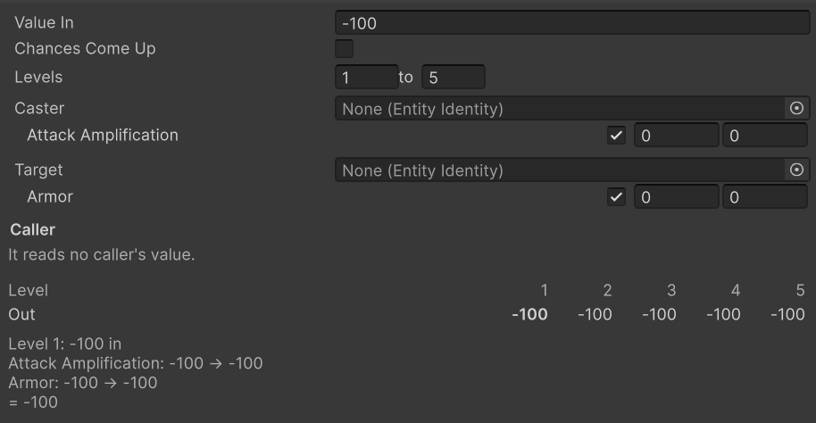

Trying a pipeline
A Value Pipeline's inspector has a Try section under its stages. It puts a value through them at each level of a range, as a Scaler asset's Try reads a scaler.

Physical Damage's Try section.
| Property | Description |
|---|---|
| Value In | The value a hit lands with, going in: a loss below 0, as a blow of 100 is −100, and a gain above. |
| Chances Come Up | Settles each roll, so a try gives the same each time (below). |
| Levels | The hit's levels, 1 to 5 to start, for a stage whose number scales by level. |
| Caster, Target and Caller | The same stand-ins as a Scaler asset's Try (below). |
Chances Come Up settles each chance a stage rolls:
- On, each comes up where it can: a critical strike doubles the hit, and a block stops it.
- Off, each misses where it can.
- A chance of 1 always comes up, and one of 0 never does.
The Caster and Target have a row for each attribute a stage reads on that side, as a Multiply stage's Damage Amplification or an Absorb stage's Barrier. You type its values, or fill them from an Entity. The Caller has a row for each key a caller sets.
Its Out row says what lands at each level. Click one to see its steps under the table: the value in, each stage's value in and out with its note, as "critical", and what comes out.
- A Block or Evade stage rolls first, as it does as an effect lands. One that comes up stops the hit: nothing of it lands, and its level shows "—".
- No effect is behind a try. So what an Absorb stage soaks comes off no one, and a stage of your own that reads
run.Carrierreads none. - What's typed is kept for the session, never in the asset.
ValuePipelineTry does the same in code: new ValuePipelineTry { Value = -100f }.Read(pipeline).
pipeline.Run(value, in context) puts a value through a pipeline against a number context of your own, with no effect
behind it.